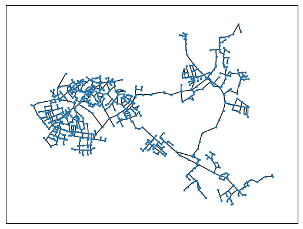
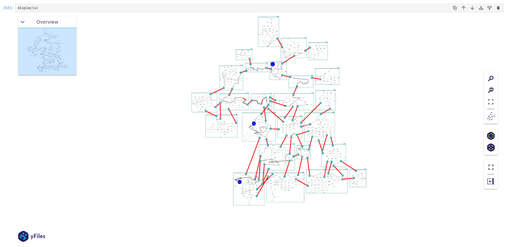
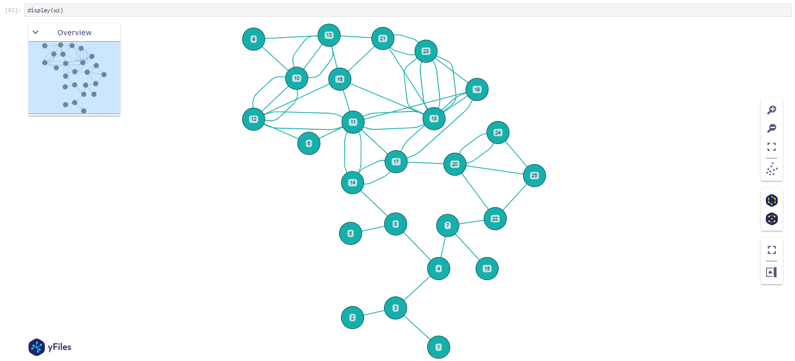

Example 6: yFiles
This example demonstrates how the NetworkX-Graph created by PT3S can be used with yFiles.
PT3S Release
[65]:
#pip install PT3S -U --no-deps
Necessary packages for this Example
When running this example for the first time on your machine, please execute the cell below. Afterward, you may need to restart the kernel (using the ‘fast-forward’ button).[66]:
pip install -q ipywidgets bokeh ipython
Note: you may need to restart the kernel to use updated packages.
Imports
[67]:
import os
import geopandas
from geopandas import GeoSeries
import logging
import pandas as pd
import io
import subprocess
import matplotlib.pyplot as plt
import matplotlib
import matplotlib.colors as mcolors
import folium
from folium.plugins import HeatMap
from IPython.display import Image
import networkx as nx
import typing
from yfiles_jupyter_graphs import GraphWidget
try:
from PT3S import dxAndMxHelperFcts
except:
import dxAndMxHelperFcts
try:
from PT3S import Mx
except:
import Mx
try:
from PT3S import Rm
except:
import Rm
[68]:
import importlib
Logging
[69]:
logger = logging.getLogger()
logFileName= r"Example6.log"
loglevel = logging.DEBUG
logging.basicConfig(filename=logFileName
,filemode='w'
,level=loglevel
,format="%(asctime)s ; %(name)-60s ; %(levelname)-7s ; %(message)s")
fileHandler = logging.FileHandler(logFileName)
logger.addHandler(fileHandler)
consoleHandler = logging.StreamHandler()
consoleHandler.setFormatter(logging.Formatter("%(levelname)-7s ; %(message)s"))
consoleHandler.setLevel(logging.INFO)
logger.addHandler(consoleHandler)
Read Model and Results
[70]:
dbFilename="Example6"
dbFile=os.path.join(os.path.dirname(os.path.abspath(dxAndMxHelperFcts.__file__))
+'/Examples/'
+dbFilename
+'.db3'
)
[71]:
m=dxAndMxHelperFcts.readDxAndMx(dbFile=dbFile,preventPklDump=True,maxRecords=0)
INFO ; Dx.__init__: dbFile (abspath): c:\users\aUserName\3s\pt3s\Examples\Example6.db3 exists readable ...
INFO ; Dx.__init__: dbFile (abspath): c:\users\aUserName\3s\pt3s\Examples\Example6.db3 exists readable ...
Network Graph m.G
GNet: only the Net, only the Supply layer
[ ]:
[72]:
netNodes=[n for (n,data) in m.G.nodes(data=True) if
data['KVR'] in [1,'1'] # nur der VL
and data['ID_CONT']==data['IDPARENT_CONT'] # nur das Netz
]
[73]:
GNet=m.G.subgraph(netNodes)
examine GNet with nx
[74]:
nx.number_connected_components(GNet)
[74]:
1
[75]:
nx.draw_networkx(GNet,with_labels = False,node_size=3,pos=m.nodeposDctNx)

examine max. disconnected Subgraph
Separating valves are defined in the network. If necessary, separating valves can divide the network into individual areas, e.g. for isolating areas with large leaks. All separating valves are defined in the model as follows: They are located in the “TS” block.
[76]:
def falseIfSeparatingValveTrueElse(n1, n2):
if GNet[n1][n2]['NAME_CONT']=='TS' and GNet[n1][n2]['OBJTYPE']=='VENT':
return False
else:
return True
[77]:
Ghk=nx.subgraph_view(GNet,filter_edge=falseIfSeparatingValveTrueElse)
[78]:
nx.number_connected_components(Ghk)
[78]:
25
examine Subgraph in terms of raw data
[79]:
gNetNodeTks=[data['tk'] for n, data in GNet.nodes(data=True)]
[80]:
dfNodes=m.V3_KNOT
dfNodes=dfNodes[(dfNodes['tk'].isin(gNetNodeTks))]
dfNodes.shape[0],len(GNet.nodes)
[80]:
(773, 773)
[81]:
dfEdges=m.V3_VBEL.reset_index()
dfEdges=dfEdges[(dfEdges['fkKI'].isin(gNetNodeTks)) &
(dfEdges['fkKK'].isin(gNetNodeTks))
]
dfEdges.shape[0],len(GNet.edges)
[81]:
(891, 891)
Subgraph as yFiles
[82]:
w=GraphWidget(graph=GNet)
set node grouping
construct group nodes (not used)
[83]:
pzon_nodes = [
{"id": int(pzon)
, "properties": {"label": pzon
, 'NAME_PZON': pzon
,'NAME_CONT_VKNO': None
,'NAME': pzon
}
, "coordinates": [m.gdf_KNOT[m.gdf_KNOT['NAME_PZON']==pzon].to_crs('EPSG:4326').dissolve().centroid.geometry.iloc[0].centroid.y
,m.gdf_KNOT[m.gdf_KNOT['NAME_PZON']==pzon].to_crs('EPSG:4326').dissolve().centroid.geometry.iloc[0].centroid.x]
}
for pzon in sorted(dfNodes['NAME_PZON'].unique())
]
let yFiles contruct the group nodes
yFiles requests for grouping so called group nodes; if w.node_parent_group_mapping is used instead of w.node_parent_mapping yFiles constructs group nodes implicitely
[84]:
w.get_node_parent_group_mapping()
[84]:
<function yfiles_jupyter_graphs.widget.GraphWidget.default_node_parent_group_mapping(index: int, node: Dict)>
[85]:
def my_node_coordinates(node: typing.Dict):
geom=GeoSeries.from_wkb([node['properties']['GEOMWKB']],crs='EPSG:25832').to_crs('EPSG:4326').geometry.iloc[0]
lon=geom.centroid.x
lat=geom.centroid.y
return(lat,lon)
[86]:
my_node_coordinates(w.nodes[0])
[86]:
(0.8870190478911403, 4.999389740851918)
[87]:
def my_node_parent_group_mapping(node: typing.Dict):
return {
'label':node['properties']['NAME_PZON']
,"coordinates": [my_node_coordinates(node)[0],my_node_coordinates(node)[1]]
# [m.gdf_KNOT[m.gdf_KNOT['NAME_PZON']==node['properties']['NAME_PZON']].to_crs('EPSG:4326').dissolve().centroid.geometry.iloc[0].centroid.y
# ,m.gdf_KNOT[m.gdf_KNOT['NAME_PZON']==node['properties']['NAME_PZON']].to_crs('EPSG:4326').dissolve().centroid.geometry.iloc[0].centroid.x]
#[my_node_coordinates(node)[0],my_node_coordinates(node)[1]]
}
[88]:
my_node_parent_group_mapping(w.nodes[0])
[88]:
{'label': '22', 'coordinates': [0.8870190478911403, 4.999389740851918]}
[89]:
w.set_node_parent_group_mapping(my_node_parent_group_mapping)
[90]:
#w.node_parent_group_mapping = "NAME_PZON"
set node coordinate mapping
[91]:
w.get_node_coordinate_mapping()
[91]:
<function yfiles_jupyter_graphs.widget.GraphWidget.default_node_coordinate_mapping(index: int, node: Dict)>
[92]:
def my_node_coordinate_mapping(node: typing.Dict):
if 'GEOMWKB' in node['properties'].keys():
#geom=GeoSeries.from_wkb([node['properties']['GEOMWKB']],crs='EPSG:25832').to_crs('EPSG:4326').geometry.iloc[0]
#lon=geom.centroid.x
#lat=geom.centroid.y
#return(lat,lon)
return my_node_coordinates(node)
elif "coordinates" in node.keys():
return node['coordinates']
elif "coordinates" in node['properties'].keys():
return (node['properties']['coordinates'][0],node['properties']['coordinates'][1])
else:
print('ERROR in my_node_coordinate_mapping.')
#return(0,0)
[93]:
node=w.nodes[0]
#sorted(node['properties'])#['GEOMWKB']
[94]:
my_node_coordinate_mapping(node)
[94]:
(0.8870190478911403, 4.999389740851918)
[95]:
w.set_node_coordinate_mapping(my_node_coordinate_mapping)
set edge thickness mapping
[96]:
w.get_edge_thickness_factor_mapping()
[96]:
<function yfiles_jupyter_graphs.widget.GraphWidget.default_edge_thickness_factor_mapping(index: int, edge: Dict)>
[97]:
DImin=dfEdges['DI'].min()
DImax=dfEdges['DI'].max()
norm = plt.Normalize(vmin=DImin, vmax=DImax)
line_width_factor=10
line_width_min=1
def my_edge_thickness_factor_mapping(edge: typing.Dict):
"""DI as thickness"""
if edge['properties']['OBJTYPE']=='VENT':
return max(line_width_min,norm(DImax)*line_width_factor) # VENTs (Valves) with max. ROHR-(Pipe-)Thickness
else:
if 'DI' in edge['properties'].keys():
if isinstance(edge['properties']['DI'],float):
return max(line_width_min,norm(edge['properties']['DI'])*line_width_factor)
else:
return line_width_min
[98]:
edge=w.edges[0]
#sorted(edge['properties'])
[99]:
my_edge_thickness_factor_mapping(edge)
[99]:
2.243620578701126
[100]:
w.set_edge_thickness_factor_mapping(my_edge_thickness_factor_mapping)
set edge color mapping
[101]:
w.get_edge_color_mapping()
[101]:
<bound method GraphWidget.default_edge_color_mapping of GraphWidget(layout=Layout(height='500px', width='100%'))>
[102]:
colors=['lightgrey', 'dimgrey']
cmap = mcolors.LinearSegmentedColormap.from_list('cmap', colors, N=256)
cMin=matplotlib.colors.to_rgb(cmap(norm(DImin)))
def my_edge_color_mapping(edge: typing.Dict):
"""DI as color"""
if edge['properties']['OBJTYPE']=='VENT':
return matplotlib.colors.to_hex('red')#"#0096C7" #matplotlib.colors.to_rgb('red') .to_hex(c
else:
if 'DI' in edge['properties'].keys():
if isinstance(edge['properties']['DI'],float):
return matplotlib.colors.to_hex(cmap(norm(edge['properties']['DI'])))
else:
return cMin
[103]:
my_edge_color_mapping(edge)
[103]:
'#bbbbbb'
[104]:
matplotlib.colors.to_rgb('red')
[104]:
(1.0, 0.0, 0.0)
[105]:
cMin
[105]:
(0.8274509803921568, 0.8274509803921568, 0.8274509803921568)
[106]:
w.set_edge_color_mapping(my_edge_color_mapping)
set node size mapping
[107]:
w.get_node_size_mapping()
[107]:
<function yfiles_jupyter_graphs.widget.GraphWidget.default_node_size_mapping(index: int, node: Dict)>
[108]:
def my_node_size_mapping(node: typing.Dict):
"""Select a width and height for the node"""
width_default=55
height_default=55
if 'NAME_CONT_VKNO' not in node['properties'].keys(): # yFiles' implicit created nodes ...
return width_default/10.,height_default/10.
if not pd.isnull(node['properties']['NAME_CONT_VKNO']):
if node['properties']['NAME_CONT_VKNO'] in ['H','R']:
return width_default*2,height_default*2
else:
return width_default,height_default
else:
return width_default/10.,height_default/10.
[109]:
#sorted(node['properties'])
[110]:
w.set_node_size_mapping(my_node_size_mapping)
set node label mapping
[111]:
w.get_node_label_mapping()
[111]:
<bound method GraphWidget.default_node_label_mapping of GraphWidget(layout=Layout(height='500px', width='100%'))>
[112]:
def my_node_label_mapping(node: typing.Dict):
""""""
if 'NAME' in node['properties'].keys(): # yFiles' implicit created nodes ...
dct= {'text':node['properties']['NAME']}
elif 'label' in node['properties'].keys():
dct= {'text':node['properties']['label']}
if 'NAME_CONT_VKNO' not in node['properties'].keys(): # yFiles' implicit created nodes ...
return dct
if not pd.isnull(node['properties']['NAME_CONT_VKNO']):
if node['properties']['NAME_CONT_VKNO'] in (['H','R']):
pass
#dct['backgroundColor']=matplotlib.colors.to_hex('red')
return dct
[113]:
w.set_node_label_mapping(my_node_label_mapping)
set node style mapping
[114]:
w.get_node_styles_mapping()
[114]:
<function yfiles_jupyter_graphs.widget.GraphWidget.default_node_styles_mapping(index: int, node: Dict)>
[115]:
def my_node_styles_mapping(node: typing.Dict):
""""""
if 'NAME' in node['properties'].keys(): # yFiles' implicit created nodes ...
dct= {}
elif 'label' in node['properties'].keys():
dct= {}
if 'NAME_CONT_VKNO' not in node['properties'].keys(): # yFiles' implicit created nodes ...
return {}
if not pd.isnull(node['properties']['NAME_CONT_VKNO']):
if node['properties']['NAME_CONT_VKNO'] in (['H','R']):
pass
dct['color']=matplotlib.colors.to_hex('blue')
if node['properties']['NAME_CONT_VKNO']=='R':
dct['shape']='octagon'
elif node['properties']['NAME_CONT_VKNO']=='H':
dct['shape']='hexagon'
return dct
[116]:
w.set_node_styles_mapping(my_node_styles_mapping)
[117]:
#dir(node)
show graph
[118]:
display(w)
[119]:
try:
image = Image(filename=os.path.dirname(os.path.abspath(dxAndMxHelperFcts.__file__))+r"\Examples\Images\3_example6_yfilesgraph.png")
display(image)
except:
print('png not displayed')

corresponding Graph with groups as nodes
[120]:
zone_nodes = [
{"id": int(pzon)
, "properties": {"label": pzon
, 'NAME_PZON': pzon
# ,'NAME_CONT_VKNO': None
# ,'NAME': pzon
}
, "coordinates": [m.gdf_KNOT[m.gdf_KNOT['NAME_PZON']==pzon].to_crs('EPSG:4326').dissolve().centroid.geometry.iloc[0].centroid.y
,m.gdf_KNOT[m.gdf_KNOT['NAME_PZON']==pzon].to_crs('EPSG:4326').dissolve().centroid.geometry.iloc[0].centroid.x]
}
for pzon in sorted(dfNodes['NAME_PZON'].unique())
]
[121]:
#pzon_nodes
[122]:
df_zone_edges=dfEdges[(dfEdges['OBJTYPE'].isin(['VENT']))
&
(dfEdges['ID_CONT']!=dfEdges['IDPARENT_CONT'])
]
[123]:
zone_edges = [
{"start": dfNodes[dfNodes['NAME']==row['NAME_i']].iloc[0]['NAME_PZON']
, "end": dfNodes[dfNodes['NAME']==row['NAME_k']].iloc[0]['NAME_PZON']
, "label": ""
, "properties": {}
, "directed": False}
for index, row in df_zone_edges.iterrows()
]
[124]:
wz = GraphWidget()
[125]:
wz.edges = zone_edges
wz.nodes = zone_nodes
[126]:
wz.set_node_coordinate_mapping="coordinates"
[127]:
display(wz)
[128]:
try:
image = Image(filename=os.path.dirname(os.path.abspath(dxAndMxHelperFcts.__file__))+r"\Examples\Images\4_example6_yfilesgraph.png")
display(image)
except:
print('png not displayed')
